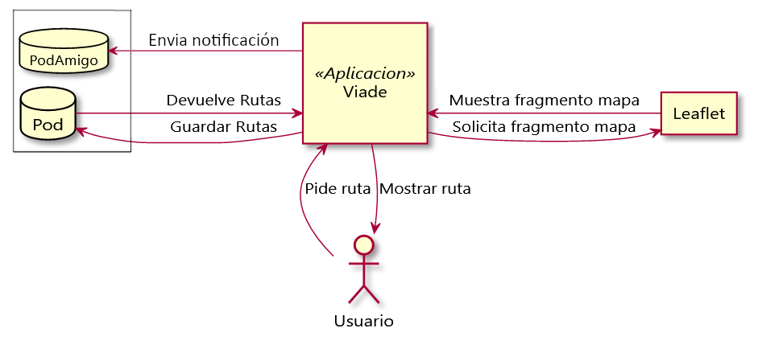
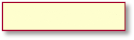
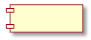
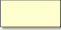
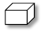

1. Introducción y objetivos
El objetivo es crear un sistema de gestión de rutas descentralizado basado en las especificaciones Solid utilizando el framework React.
1.1. Resumen de requisitos
Los requisitos de la aplicación son:
-
El sistema se basará en una arquitectura descentralizada en la que los datos están separados de la aplicación
-
Los usuarios pueden almacenar las rutas en sus pods propios.
-
Los usuarios podrán visualizar las rutas en un mapa.
-
La aplicación permitirá al usuario compartir fotos, vídeos u otro tipo de ficheros con otros amigos.
-
Un usuario puede obtener notificaciones cuando algún amigo quiera compartir una ruta con él.
-
Los usuarios pueden tener grupos de amigos con quienes ellos puedan querer compartir una ruta.
1.2. Objetivos de calidad
| Objetivo | Motivación |
|---|---|
Privacidad |
Es importante mantener la privacidad de los datos de cada usuario almacenándolos en su propio POD |
Usabilidad |
El usuario debe sentirse cómodo usando nuestra aplicación independientemente de sus conocimientos de informática |
Eficiencia |
Un tiempo de respuesta largo puede hacer pensar al usuario que la aplicación no funciona y, por tanto, dejar de usarla |
Interoperabilidad |
La aplicación debe ser capaz de cargar y compartir rutas con otras aplicaciones SOLID similares |
Disponibilidad |
La aplicación debe tener estar disponible lo más cerca posible al 100% del tiempo |
1.3. Stakeholders
| Rol/Nombre | Descripción | Expectativas |
|---|---|---|
Profesores |
Evalúan la aplicación y aconsejan en las bases del desarrollo de la aplicación |
Esperan que los estudiantes trabajen en equipo, se desenvuelvan a la hora de aprender una nueva tecnología y tengan la iniciativa en la toma de decisiones. |
Senderistas |
Serán los interesados en conocer rutas o añadir las suyas |
Usaran la aplicación para guardar y compartir rutas con personas o con grupos de personas de forma usable, disponible, rápida y segura. También harán uso de la aplicación para seguir la ruta que elijan. |
Inrupt |
Organización que fomenta y desarrolla Solid y ha propuesto el desafío |
Esperan que los estudiantes creen una aplicación descentralizada usando Solid para fomentar su uso. |
Desarrolladores |
Diseñan e implementan la aplicación tanto desde un punto de vista arquitectónico, como desde la codificación |
Esperan aprender a trabajar en equipo, ser capaces de realizar una aplicación funcional de rutas descentralizadas y saber ampliar sus horizontes con nuevas tecnologías. |
2. Restricciones de la Arquitectura
2.1. Restricciones Técnicas
| ID | Restricción | Descripción |
|---|---|---|
RT1 |
Uso React |
Para una mayor rapidez a la hora de trabajar con java script, y teniendo a nuestra disposición el gran número de librerías de la que esta dispone. |
RT2 |
Uso Solid |
Nos basaremos en la funcionalidad que intenta conseguir Solid para hacer uso de sus principios consiguiendo lo que se denomina una aplicación descentralizada. |
RT3 |
Uso Bootstrap |
Haremos uso del framework bootstrap para modificar la parte de interfaz de usuario (UI) así como la experiencia de usuario (UX). |
RT4 |
Uso Leaflet |
Utilizaremos la librería Leaflet para la implementación del mapa en la aplicación, así como la visualización de las rutas en el mismo. |
RT5 |
Uso de Puppeteer |
Se hará uso de la librería pupeteer de Node para la implementación de test de funcionalidad. |
RT6 |
Uso de Jest |
Se realizarán los test unitarios bajo el marco de pruebas de Jest. |
2.2. Restricciones Organizativas
ID |
Restricción |
Descripción |
RO1 |
Reuniones Semanales |
Para paliar nuestra inexperiencia con las nuevas tecnologías y trabajando en equipo hemos realizado reuniones para consensuar los avances y poder tener un mejor seguimiento del equipo. |
RO2 |
Tiempo |
Comenzando a principio del cuatrimestre y teniendo en cuenta las sucesivas revisiones del proyecto, nos acogemos al tiempo organizado según las directrices de la asignatura, por lo que el proyecto tendrá que ser terminado en 3 meses. |
RO3 |
Pair Programing |
La funcionalidad de la aplicación ha sido implementada por dos personas, que han empezado de cero con las tecnologías en las que está desarrollada la aplicación, por ello se ha usado esta técnica para brindar un apoyo mutuo a la hora de implementar nuevas funcionalidades. |
2.3. Convenciones
ID |
Restricción |
Descripción |
C1 |
Git |
Usaremos las grandes ventajas que nos ofrece GitHub para organizarnos de manera más eficiente, así mismo podremos tener versiones sucesivas del proyecto, a las que poder volver ante cualquier imprevisto. |
C2 |
Arc42 |
Seguiremos las directrices de la metodología Arc42 para organizar la documentación de nuestro proyecto. |
C3 |
Idioma |
Se utilizará el castellano como idioma para la realización del proyecto para facilitar la documentación y la comunicación entre los miembros del equipo. |
3. Alcance y contexto del sistema
3.1. Contexto empresarial y técnico

Leyenda:
Símbolo |
Significado |
Usuario que interactúa con la aplicación. |
|
 |
Entidades del sistema. |
POD de SOLID para almacenar información. |
El usuario pide una ruta a la aplicación y esta se comunica con el pod del usuario para obtener la información que es renderizada y mostrada al usuario. Por otro lado, para que la aplicación pueda mostrar el mapa hace uso de Leaflet, le pide el fragmento que quiere mostrar y este le devuelve las imágenes para poder mostrar el mapa (esto se realiza automáticamente gracias a la librería de Leaflet). El usuario también puede compartir rutas con amigos, para ello la aplicación generará una notificación en el pod del amigo.
4. Estrategia de Solución
4.1. Tecnología:
En cuanto a las tecnologías usaremos React y Solid como se redactó en las Restricciones de la arquitectura. Parte de la tecnología usada para el desarrollo de la aplicación es parte de las restricciones. Hemos consensuado usar Visual Studio Code como editor de texto para el desarrollo del código para un trabajo en equipo más dinámico.
4.2. Descomposición del sistema:
Teniendo en cuenta que se usaran los principios de Solid, tendremos una aplicación descentralizada en la que la base de datos será el Pod de cada usuario. Nos comunicaremos con los Pods de Solid utilizando la librería solid-react-components. Al usar React seguiremos una estructura en la que la vista, la lógica y el dominio estarán "juntos".
4.3. Cómo alcanzar los atributos de calidad:
Se han tenido en cuenta muchos atributos de calidad, aunque los considerados más importantes son la disponibilidad, seguridad, consistencia y robustez.
Para alcanzar estos atributos:
-
Disponibilidad: Uso de Docker para el despliegue de la aplicación, eliminando así todos los posibles errores que pudieran surgir por dependencias o versiones concretas.
-
Comunicación: Se ha usado de la mejor manera posible los medios disponibles a su alcance, como reuniones en Teams, un grupo de Whatsapp, así como las herramientas que nos proporciona Github, para discutir cada problema o idea, aportando la información que se ha encontrado de utilidad.
-
División de tareas: El proyecto se ha dividido en tareas distintas entre los miembros del equipo para poder trabajar de forma paralela y conseguir un ritmo eficiente.
4.4. Decisiones de organización:
En la mitad del desarrollo del proyecto, al ver que las aportaciones mayoritarias en la funcionalidad de este eran de dos de los integrantes, se tomó la decisión de hacer una reorganización de roles, asignando a los otros dos integrantes para la realización fundamental de test y documentación, aunque esta última fue revisada y reestructurada por los integrantes que han realizado la funcionalidad. Se han hecho reuniones semanales para consensuar el trabajo a realizar y llevar un control de las aportaciones de cada participante, las cuales han sido añadidas a la wiki del repositorio.
4.4.1. Librerías y otros repositorios
Se ha utilizado las librerías:
-
Solid React Components para la correcta fusión de las funcionalidades de la aplicación con SOLID y la utilización de los PODS.
-
React Leaflet para la renderización de un mapa interactuable en el que se pueden visualizar las rutas que existen en el POD.
Se han usado de guía los repositorios:
-
Solid React Components, se ha utilizado para ayudarnos a implementar diversas funcionalidades clave de la aplicación.
5. Vista del bloque de construcción
5.1. Nivel 1

Leyenda:
Símbolo |
Significado |
Usuario que interactúa con la aplicación |
|
Caja Negra |
|
POD de SOLID para almacenar información |
|
Contenedor de elementos del diagrama |
El usuario interacciona con la aplicación para ver y compartir rutas.
La aplicación accede a los archivos del pod del usuario para guardar y cargar datos.
5.2. Nivel 2

Leyenda:
Símbolo |
Significado |
Contenedor de elementos del diagrama |
|
 |
Componente React de importancia para la arquitectura |
Caja Negra |
El componente Main es el encargado de desplegar la aplicación y gestionar los distintos componentes de esta.
En la gestión de Mapa existe un único componente importante. En esta sección se controla el mapa de la aplicación, para que sea visible al usuario.
La gestión de pods tiene diferentes componentes dedicados a distintas tareas. Estas tareas serán: guardar archivos en el pod, guardar las rutas públicas para compartirlas y de compartirlas, cargar las rutas para mostrarlas en el mapa y mostrar las notificaciones recibidas
La Internacionalización es llamada desde todos los módulos para obtener los textos a mostrar en la interfaz.
5.3. Nivel 3
5.3.1. Gestor de Pods

Leyenda:
Símbolo |
Significado |
Componente 12_glossary.adoc[React] de importancia para la arquitectura |
|
Contenedor de elementos del diagrama |
El componente UploadToPod se encarga de subir los archivos seleccionados por el usuario al pod del mismo.
El componente MapList se encarga de listar los archivos disponibles en el pod del usuario y se comunica por el componente Map para mostrar las rutas que seleccione el usuario de la lista cargada.
El componente Share se encarga de mostrar una lista de amigos del usuario y hacer una copia de un archivo seleccionado por el usuario en una carpeta publica y compartir el enlace de dicha carpeta con los amigos seleccionados.
El componente Notification se encarga de mostrar el número de notificaciones que tiene el usuario en la carpeta inbox del pod.
6. Vista de tiempo de ejecución
6.1. Iniciar Sesión

6.2. Escenario Nueva Ruta

6.3. Escenario Ver Ruta

6.4. Compartir archivos

Leyenda:
Símbolo |
Significado |
Usuario que interactúa con la aplicación |
|
POD de SOLID para almacenar información |
|
Modulo del sistema |
7. Vista de despliegue

Leyenda:
Símbolo |
Significado |
 |
Aplicaciones de interconexión. |
POD de SOLID para almacenar información. |
|
 |
Contenedor de elementos del diagrama. |
Uso de protocolo de transferencia seguro para la conexión entre los elementos del sistema. |
La aplicación está desplegada en nuestra página de GitHub. Todos los cambios que se realicen en la rama master del repositorio serán desplegados automáticamente gracias al uso de la herramienta Travis.
Para el despliegue en local de la aplicación, una vez descargado el repositorio, se usará la herramienta Node para instalar las dependencias necesarias mediante el comando npm install. A continuación, si se desea ejecutar la aplicación en modo desarrollo habrá que usar el comando npm start.
Para la compilación del proyecto de manera local, se usará el comando npm run build.
Para realizar los test de la aplicación basta con introducir el comando npm run test para los unitarios y npm run test:e2e para los funcionales.
8. Conceptos transversales
8.1. Conceptos de dominio
-
Ruta: Una ruta representa una trayectoria formada por puntos cuya información será compartida o guardada.
-
Pod: Un usuario almacena sus datos personales en "Pods" (almacenes de datos personales sobre los que el usuario tiene total control de su información).
-
Cliente: Persona que usa la aplicación para compartir o ver una ruta.
8.2. Reglas para usar la tecnología
Los pasos para usar la aplicación son los siguientes:
-
Abrir el navegador.
-
Introducir la URL de la aplicación.
-
Si tienes una cuenta inicias sesión en caso contrario es necesario registrarse.
-
Ver y compartir rutas.
8.3. Reglas de implementación
Separamos la parte de vista del mapa y las dependencias del SolidPod y del login. También se evita la duplicación de código.
8.4. Conceptos de seguridad y protección
Logramos la comunicación segura entre canales mediante el protocolo HTTPS. Gracias a los Pods los datos del usuario se almacenarán con un enfoque privado y descentralizado.
8.5. Conceptos de desarrollo
-
Build: Nuestra aplicación usará el paquete web NodeJS,npm para construir la aplicación.
-
Prueba: Utilizamos el framework Jest para probar nuestra aplicación.
-
Despliegue: Nuestra aplicación se desplegará utilizando páginas de GitHub.
9. Decisiones de Diseño
Decisión |
Ventajas |
Desventajas |
Documentación en español |
Mayor velocidad de documentación y mayor calidad al ser lenguaje materno |
No es el idioma más usado en proyectos. |
Función de compartir simple |
Mayor facilidad a la hora de ampliar esta funcionalidad |
Mas complejo para el usuario acceder a los archivos compartidos, teniendo que acceder al enlace que se comparte y descargando la información del pod desde el que fue compartido. |
Utilizar una única página para toda la aplicación |
Es más fácil de implementar y se visualiza más rápido |
Puede quedar demasiado cargada. |
Lista de Archivos a Compartir |
Para compartir el archivo únicamente es necesario elegir de la lista el archivo que se desea compartir, en lugar de escribir la ruta completa del archivo. |
Se pierde la capacidad de compartir cualquier archivo que exista dentro del pod del usuario, limitándose solo a una zona de este. |
10. Requisitos de calidad
10.1. Árbol de calidad
10.2. Escenarios de calidad
Se ha hecho un esfuerzo para intentar definir los escenarios de calidad en diversas categorías.
Usabilidad |
Estímulo |
Solución |
Prioridad |
U1 |
Usuario novel intenta hacer uso de las funcionalidades de la aplicación |
Las funcionalidades que posee la aplicación están descritas con un título fácil de identificar |
Alta |
Mantenibilidad |
Estímulo |
Solución |
Prioridad |
M1 |
Necesidad de añadir una nueva funcionalidad |
Se ha realizado una gestión del proyecto limpia y sencilla para una buena escalabilidad y que el incorporar nuevas funcionalidades no entrame mayor dificultad. |
Media |
Privacidad |
Estímulo |
Solución |
Prioridad |
P1 |
Un usuario desea que la aplicación no pueda acceder a parte de sus datos |
La aplicación está desarrollada con la tecnología de Solid y con ello el usuario podrá elegir cuales son los datos que maneja la aplicación. |
Alta |
Eficiencia |
Estímulo |
Solución |
Prioridad |
E1 |
Un usuario desea cargar una ruta en el mapa y es necesaria una rápida respuesta |
La forma en la que esta implementada la funcionalidad de mostrar rutas en el mapa hace que sea prácticamente instantánea la visualización de estas. |
Alta |
11. Riesgos y Deudas Técnicas
11.1. Riesgos
Riesgos |
Solución |
Cambios en la plataforma de SOLID |
Actualizar la aplicación en función de los cambios que se produzcan en la plataforma de Solid. |
Actualizaciones de librerías externas |
Utilizar npm para guardar la versión de la librería que se usa actualmente y la aplicación permanezca sin errores. Habría que contemplar la posibilidad de actualizar las librerías si estas nos ofrecen mejoras. |
11.2. Deudas Técnicas
Deudas técnicas |
Descripción |
Pedir permisos de manera automática a solid.community |
Para poder usar nuestra aplicación hay que autorizar dentro del servidor de pods de solid.community nuestra aplicación. Esto debería de pedirse desde la aplicación, pero de momento se seguirá haciendo de manera manual. |
Existencia de grupos de amigos dentro de la aplicación |
Actualmente la manera de compartir archivos con varias personas a la vez es seleccionar a todas aquellas a las que les quieras proporcionar el archivo. |
Interoperabilidad con otras aplicaciones VIADE |
La aplicación no cuenta con el formato de rutas estándar, en el futuro deberá seguir las especificaciones de https://github.com/Arquisoft/viadeSpec |
Dependencia con solid.community (popup.html) |
Para no tener una dependencia con https://solid.community/common/Descargar hay que descargar el archivo popup.html |
12. Glosario
Framework de JavaScript que nos da la posibilidad de crear interfaces de usuario de una manera fácil e intuitiva. |
|
Que nos dará una aplicación descentralizada ofreciéndonos un alto nivel de privacidad. |
|
Pod |
Almacenamiento descentralizado que se usa en aplicaciones Solid que permite al usuario conservar el control y la propiedad de sus datos. |
Plantilla para la comunicación y documentación de arquitectura que responde a que debemos documentar y a cómo debemos documentar. |
|
marco de prueba de JavaScript para el desarrollo de pruebas unitarias. |
|
Cucumber es una herramienta de software que ejecuta pruebas de aceptación automatizadas escritas en un estilo de desarrollo basado en el comportamiento (BBD). |
|
Librería de Node que proporciona una API de alto nivel para controlar Chrome o Chromium. |
|
Conjunto de herramientas de código abierto para diseño de sitios y aplicaciones web. |
|
Framework |
Entorno de trabajo, conjunto estandarizado de conceptos, prácticas y criterios para enfocar un tipo de problemática particular que sirve como referencia, para enfrentar y resolver nuevos problemas de índole similar. |
Librería que aporta las funcionalidades necesarias para mostrar y gestionar un mapa interactuable. |
|
Entorno en tiempo de ejecución multiplataforma, de código abierto, para la capa del servidor basado en el lenguaje de programación JavaScript. |
|
Sistema de gestión de paquetes por defecto para Node.js. |
About arc42
arc42, the Template for documentation of software and system architecture.
By Dr. Gernot Starke, Dr. Peter Hruschka and contributors.
Template Revision: 7.0 EN (based on asciidoc), January 2017
© We acknowledge that this document uses material from the arc 42 architecture template, http://www.arc42.de. Created by Dr. Peter Hruschka & Dr. Gernot Starke.